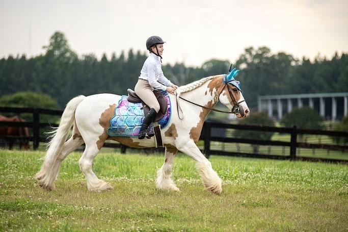

It is not easy to challenge the morals of the sport that has become such an integral part of my life. As a young kid who has always been in love with horses, it was hard to see some of the flaws of the equestrian world, such as the mistreatment of horses and harsh training methods. As I’ve gotten older and competed in more horse shows, I’ve witnessed some of the negative aspects of specific disciplines of riding. I have noticed a tendency among western pleasure riders to harshly jerk the reins, thinking it will enhance their horse’s performance. As a rider who was trained early with natural horsemanship methods, it felt clear that there was an understanding between the horse and person, using body language as the main source of communication. Francesca Oldfield, who has thirty years of experience with training horses, defines natural horsemanship as a “way of reading and understanding horse bahaviour, using body language to communicate effectively with your horse. It’s about building a partnership that is equal between horse and human.” I thought that the majority of the equestrian population used these methods, as though it was the standard method of training. I have seen unwilling and frightened horses, and realized that if they were treated and trained in a way they could understand and learn, they wouldn’t be having these issues. Based on her article, people will still train horses in traditional ways such as: hobbling the horse, tying the horse until they stop fighting, and forcing the horse into submission. These methods are not fair to the animal, and I do not agree with any of them. If people understood these tactics as harmful, then they will most likely stray to other methods.
Most people do not want to hurt their horses and instead treat them with the respect they should. I do not consider horseback riding “animal abuse,” even though a student in my class believed I harmed my horses just because I rode them. Many people in society lack an understanding of not only what horseback riding is, but everything else that is involved with it, such as: getting the horse from the field, grooming, tacking up, warm ups and cool downs, untacking, more brushing, and turnout. Riding is only a portion of the time spent with an equine partner. It is important to understand the health and welfare of the horse in regards to riding, riding attire, natural horsemanship methods of training, and the way horses are viewed by owners. While there are both positives and negatives of the equestrian sport in regards to the way horses are managed and trained, owners and riders have an ethical responsibility to treat horses in a fair and humane manner.
Due to being a short and lightweight rider, it has never occurred to me that my weight could hurt my horse. It seems that the number one concern for most people is “does riding hurt the horse’s back?” The answer to this question from a scientific standpoint is that horses can carry weights (saddle and rider) up to 20% of their body weight before causing soreness in their back, but there are other factors to be considered. A larger novice rider who bounces harshly in the saddle could cause back soreness. Dr. Sue Dyson is an equine veterinary surgeon who has been practicing for more than forty years. She states in her article, How to Assess the Suitability of Rider Size—Height, Morphology, and Weight—for Optimal Horse Welfare and Performance: A Review, that:
...although it is widely recognized that excessive rider size has welfare implications for horses, there has been a lack of reliable scientific evidence on which to base guidelines. This is a multifactorial issue with many interrelated aspects, including the horse’s age; its fitness and muscle development; the length of the thoracolumbar region; the presence or absence of lameness or other musculoskeletal problems; the type, speed, and duration of work; the rider’s skill, fitness, balance, and coordination; the ability of the rider to sit straight; the fit of the saddle to both the horse and rider; and the terrain over which the horse is ridden.
Although pain can be caused by the rider, some horses have musculoskeletal issues which would make carrying a rider painful (such as kissing spine or swayback), along with improper saddle fitting. Because saddle fitting is extremely important for a horse’s comfort, equestrians utilize professional saddle fitters. Saddles can be properly fitted to the horse’s back, and in some cases saddles can even be adjusted for a custom fit. Our personal saddle fitter, Kevin Chavis, has worked with us for years on keeping our horses comfortable. As our horses’ weights and muscles fluctuate, he continues to assess proper fit.
Riding horses is a form of physical exercise that is beneficial for both the horse and rider. I have been riding horses since I was six years old, and it has kept me physically fit. However, exercise must be done correctly in order to prevent injuries. Veterinarians help guide horse riders and owners on how to safely build an exercise routine that promotes physical fitness for varying levels of use. By nature, wild horses travel roughly thirty miles in a twenty-four hour period. Based on a veterinarian reviewed article discussing the importance of exercise in horses, it states, “Daily exercise facilitates bone strength and development, improves the functioning of the heart, increases tendon and ligament strength and aids motility of the digestive tract, as well as increasing secretions in the lungs,” ("Daily Exercise for Your Horse”). Most people would agree that exercise is beneficial for physical wellbeing, however, riding can be beneficial for a horse’s mental health as well. Studies have shown horses prefer a variety of exercises in their training. I can speak from personal experience that my horses stay more engaged with a variety of options, such as horse shows, obstacle challenges, traveling to new places, and trail riding. In general, horses that are exposed to a variety of stimuli tend to become more confident and comfortable in different situations, making them less reactive and less likely to become injured.
The next largest concern when riding horses is the use of bits in the horse’s mouth. I have ridden my horses both with and without bits. My well-trained horse, Ricky, that I have owned since 2013, is just as responsive to my cues, with or without a bit. However, riding with a bit brings peace of mind in case something unexpected happens. Horses are not machines, therefore they are unpredictable. They are prey animals, so naturally when spooked they have the desire to flee the situation. A bit can slow, stop, or turn a horse that is running away.
When it comes to bits, the first thing to understand is that there are hundreds of different types of bits. They are made of various materials such as stainless steel, rubber, plastic, copper and sweet iron, blue alloy, and leather. There are also different models of bits such as snaffles, curb bits, pelhams, and kimberwicks, all of which serve a different purpose. The level and experience of the horse influences what bit is chosen, as well as what discipline the horse is participating in. When used correctly, bits serve as another tool for communication. They are not there for riders to help balance themselves, or as punishment for the horse. They are used for the natural horsemanship technique of pressure and release. When pressure is applied to the horse, and there is a willing response, the pressure is released as a reward. The use of bits can be explained by veterinarian Dwight G. Bennett, “A horse learns to seek a position of comfort to relieve the pressure applied by the bit in its mouth. Consequently, the rein pressure must be released the instant that the horse complies (or even tries to comply) with the request sent to it via the bit.” It helps horses learn what tasks riders are asking for. Bits however, can be very harsh, especially when used incorrectly. People have the ability to neglect this tool, and use it in a negative manner by yanking, pulling, and giving an unwilling release of pressure, which causes pain in the horse’s mouth. This is an example of an unethical use of a riding aid, due to the pain and confusion it can cause. The bit is designed to be used for subtle communication as most riders communicate through seat and leg position. Some riders however, do not choose to use a bit in their horse’s mouth because they do not believe it is ethical to do so. While the majority of riders often use this riding aid, there are still others that disagree with it. Based on my own experiences, I only use the bit as a form of redirection of the task asked (such as a stop to a pivot), or guidance to understand what I am asking for. In other worst case scenarios or emergencies, the bit is a strong tool to slow down a runaway or frightened horse, which is not only for the safety of the rider, but the horse as well.
Bits are only one example of a use of an artificial riding aid, other controversial aids include whips and spurs, both are which are used as an extension of a rider’s body. When people think of spurs, they think of western cowboy movies when horses are jabbed to make them go faster. Spurs are more often used as a pinpoint cue to specify to the horse what maneuver they are asking for (more often in terms of lateral movement). Spurs are not about kicking the horse as hard as you can, they are about applying pressure to the sides of the horse in a specific location. Spurs also vary in harshness just as bits do. There are rounded, rubber tipped spurs which allow for a softer pressure, but also larger, sharper roweled western spurs, both of which are acceptable to use as long as they are used correctly. Due to being very short, spurs have been very helpful in cuing my horse for different maneuvers, to allow for a clearer understanding.
Whips, also referred to as “crops”, are generally used in English disciplines of riding for many different reasons. Many riders wave the crop around the shoulder of the horse or wave it next to their leg to encourage a faster pace, or to transition into the next gait. Some horses lack responsiveness from regular leg aids (which is mainly caused from a lack of correct training), which is where the training tool of the crop can be useful. It is not for smacking the horse as hard as possible, it is about adding more pressure when the leg aids are not sufficient. Crops are generally used for forward commands, but can be used to direct pressure onto the horse in and out of the saddle. Whips are often misused when riders hit their horses for refusing to cross a scary obstacle or refuse a jump. This however creates a negative attachment towards jumping or scary objects, which is slowly breaking the trust that the horse has with its rider. I have seen lots of English riders misuse these training tools, and create a negative attachment between the horse and the aid. When I was riding English and my leg strength wasn’t enough, I would wave a crop by Ricky’s shoulder to encourage him to move at a faster pace. He understood what I was asking, therefore there was no need to apply any more pressure using the crop.
This release of pressure when the horse gives the right answer, or attempts to do the correct task, is the main method of natural horsemanship. Like I previously stated, when I applied the pressure of the riding crop to Ricky, he responded, so I released. This release becomes a reward, but also signals to the horse that they made the correct choice. The pressure used when cuing horses can be in different forms as well. It can be direct pressure (such as the squeeze of a leg in direct contact with the horse), or a pressure applied using energy and body language. However, it is more important to give the horse the release of pressure. As stated by Teddy Franke, a CHA (Certified Horsemanship Association) certified master riding instructor, “The real secret to pressure is not pressure at all. In fact, it’s the release of pressure. The well-timed release is crucial in communication with the horse. It says, “Well done! You found the right answer.”’ Horses understand this method, which is why it is important in all disciplines to include this essential approach. It is hard to say that one method of training is “better” than another, or that one is more effective. Having a relationship between the horse and rider in which the rider bosses the horse around and forces them to do something is not creating mutual trust and respect. While forcing the horse to do something is effective in a lot of cases, it does not mean that it is the best or most beneficial method towards creating a healthy relationship. Ross Jacobs, who has spent twenty years as a professional horse trainer and currently teaches people the principles of good horsemanship states:
In my mind, the justification lies in the choices I make. I choose not to do things with horses that I believe are not to their benefit. For example, I keep my horses in as natural an environment as possible. I choose methods and equipment that I have a thorough understanding of how and why to use. I work towards a better relationship in everything I do with a horse and strive to never stop being the student.
Not only do we train horses to understand our body language, different cues, and feeling safe in unfamiliar situations, but we, as people, also learn from horses. We learn how to become better people with qualities such as: patience, confidence, respect, and trust. The best kind of relationship happens when there is a mutual understanding between both parties. This can be accomplished between a horse and rider, especially when people treat horses in an ethical manner.
People who have horses in their lives have a stewardship responsibility to treat their equine partners with kindness and respect. The general well-being of the horse, the use of artificial riding aids, natural training methods, and the emotional attachment between horses and riders are things that should be put into consideration when deciding the ethics of this sport. Horses are bred for our use, as are other animals. Cattle and poultry are raised for food, while dogs and cats are bred to be companions. All animals can feel pain and discomfort as well as emotional distress such as fear. If a horse is ridden in such a way as to promote the horse’s physical and mental well-being there is nothing unethical about it. A well trained horse, much like a well trained dog, helps promote safety for the animal and the person. Training also promotes intellectual activity as well as relieves boredom. Most people believe that having a horse is both a great privilege and responsibility. Those individuals that are lucky enough to have shared their life with an equine partner, will have experienced a bond that most people will never truly understand or appreciate.